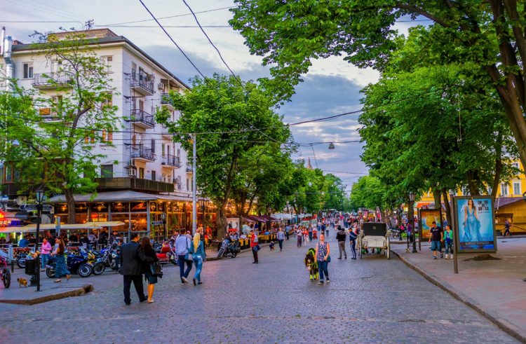
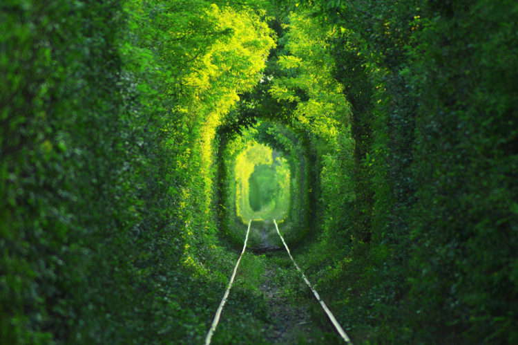

Содержание
- Киево-Печерская лавра (г. Киев)
- Площадь Независимости (г. Киев)
- Дерибасовская улица (г. Одесса)
- Хотинская крепость (Черновицкая область, г. Хотин)
- Собор Святой Софии (г. Киев)
- Тоннель любви (г. Клевань, Ривненская обл.)
- Святогорская Успенская лавра (г. Святогорск, Донецкая обл.)
- Старый замок Каменца-Подольского (г. Каменец-Подольский, Хмельницкая обл.)
- Замок Шенборнов (Закарпатская обл.)
- Остров Хортица (г.Запорожье)
- Костёл и монастырь бернардинцев (г. Львов)
- Мраморная пещера (Крым, массив Чатыр-Даг)
- Озеро Синевир (Межгорье, Закарпатская обл.)
- Украинские Карпаты (северо-запад Украины)
- Луцкий замок (Верхний Луцк)
- Парк Киевская Русь
- Музей Писанка (г. Коломыя)
- Старый город (г. Львов)
- Мукачевский замок (г. Мукачево)
- Парк Софиевка (г. Умань)
- Почаевская лавра (г. Почаев)
- Замок Радомысль (г. Радомышль)
- Госпром (г. Харьков)
- Олесский замок (п. Олеско)
- Аккерманская крепость (г. Белгород-Днестровский)
Что посмотреть в Украине, если приехали сюда впервые? За одно посещение невозможно осмотреть все достопримечательности Украины. И это хорошо, ведь будет повод приехать сюда еще не раз. Аутентичная культура, прекрасные храмы и соборы, сохранившиеся через столетия древние замки и крепости, удивительная природа и теплый климат. В Украину можно влюбиться с первого взгляда.
Что посмотреть в Украине в первую очередь
Не тратить лишнего времени на поиск мест, в которые непременно стоит отправиться во время поездки по стране, будет легко, если вы внимательно посмотрите наш список. Гиды в Украине русскоязычным путешественникам могут и не понадобиться, а вот спланировать последовательность осмотра памяток обязательно нужно!
1. Киево-Печерская лавра (г. Киев)

Золотые купола знаменитой Киево-Печерской лавры
Одной из самых главных святынь православия, что сохранилась практически в первозданном виде еще с 11 века, по праву считается Киево-Печерская лавра – первый монастырь на Руси и символ веры. Над мощными водами Днепра, на его живописных склонах, сияя золотыми куполами, красуются величественные храмы. К ним ведут утопающие в зелени вымощенные булыжником дорожки, а внизу, в подземелье, извиваясь узким лабиринтом коридоров, расположились таинственные пещеры, где находится главное сокровище лавры – святые нетленные мощи праведников.
В списке «Достопримечательности Украины» Киево-Печерская лавра занимает первое место, являясь самой посещаемой туристами и паломниками со всего мира святыней. За тысячу лет своего существования лавра перенесла множество бедствий: землетрясения, нашествие монголо-татар, пожары и войны, но после каждого перенесенного потрясения и разрушения возрождалась.
Попадая на территорию этого уникального комплекса, вы забываете о мирской суете, уходите от повседневных проблем. Вас окутывает спокойствие и таинственность. Люди приезжают сюда, чтобы своими глазами увидеть святых, покоящихся в пещерах, и, приложившись к мощам, укрепиться в вере.
Официальный сайт:https://lavra.ua/
2. Площадь Независимости (г. Киев)

Вид на площадь Независимости
Площадь Независимости, именуемая украинцами «майдан», – главная площадь столицы. Это объект, который туристы и гости города посещают обязательно. Здесь любят побродить у фонтанов, сфотографироваться рядом с величественным монументом и просто погулять. К майдану примыкают несколько главных улиц Киева: Крещатик, Институтская, Софийская, Михайловская.
Площадь меняла свое название несколько раз: в XIX веке на месте ее расположения находилась пустошь с руинами оборонительных сооружений, затем первым наименованием стало Крещатинская, после – Думская площадь, и лишь в год обретения Украиной независимости (1991) она получила свое нынешнее название.
Несмотря на громкое «мегаполис», утопающий в зелени Киев любят за его теплоту и уют. Задаваясь вопросом, что посетить в Украине, не задумываясь, приезжайте в Киев! Здесь невероятное количество уникальных по своей красоте и исторической ценности мест, где Площадь Независимости – одна из главных достопримечательностей столицы. В 2004 и 2014 годах площадь стала центром протестных митингов и революционных событий в Украине.
3. Дерибасовская улица (г. Одесса)
Дерибасовская улица, воспетая поэтами и писателями
Одесса – южная жемчужина, гостеприимный город, у которого есть душа. Пропитанный солеными брызгами Черного моря и тонким одесским юмором, город поражает своим радушием и бесконечным очарованием. Туристические компании предлагают любые туры по стране, но посетить южную Пальмиру стоит обязательно.
Здесь определенно есть что посмотреть: великолепный Оперный театр, множество исторических памятников, хмурые катакомбы, маленькие улочки и уютные дворики старого города. Но есть в Одессе нечто особенное – Дерибасовская улица, воспетая в стихах и песнях, своего рода визитная карточка города. Здесь нет шумного транспорта, можно спокойно прогуляться по пешеходной мостовой, вымощенной брусчаткой, и с головой окунуться в непередаваемую атмосферу великого города. На Дерибасовской находится множество кафе, ресторанов, летних площадок, она просто насквозь пропитана одесским колоритом. Городской сад, памятник Утесову, уличные музыканты и художники, а рядом шикарный магазин «Пассаж», являющийся памятником архитектуры XIX века, притягивает взоры прогуливающихся гостей города. Здесь хочется улыбаться просто так, без повода, дышать полной грудью, потом купить на память какую-нибудь безделушку и влюбиться в этот город на всю жизнь.
4. Хотинская крепость (Черновицкая область, г. Хотин)

Хотинская крепость - образец средневекового оборонного зодчества
Достопримечательности Украины находятся в каждом уголочке этой уникальной страны. Хотинская крепость – одно из самых зрелищных мест, где нужно обязательно побывать любому туристу. Это настоящий памятник великой истории Руси, которому уже чуть более 1000 лет.
Изначально сооружение представляло собой небольшую крепость, построенную славянами из дерева. Ее функцией была защита местного народа от захватчиков. Когда монголо-татарское иго завоевало Русь, роль этого форта сильно возросла, он охранял важнейшую переправу на реке Днестр от набегов кочевников-грабителей.
В дальнейшем здесь была построена первая небольшая каменная крепость. В течение времени ее расширяли и отстраивали заново после разрушения кочевниками. Вплоть до XIX века на этом месте постоянно проходили битвы. Принимала на себе Хотинская крепость и штурм российских войск. Об этом даже написал в своей оде М. Ломоносов. Однако позже форт потерял свой военный статус. Поселение получило собственный герб, внутри отстроили церковь в честь Александра Невского. На настоящий момент крепость является музеем. Внутри расположены монумент гетману Петру Сагайдачному, 5 башен, церкви, княжеский дворец, казармы, вход в подземелье, развалины мечети и военной школы. В Хотине проводились съемки многих известных фильмов, например, «Три мушкетера». Хотинская крепость – прекрасное место, с особой атмосферой, где история оживает.
Официальный сайт:http://khotynska-fortecya.cv.ua/
Стоимость услуг
- Входная плата на территорию Заповедника с правом фото и видеосъемки:
- Для детей – 40 (сорок) гривен;
- Для студентов (при наличии студенческого билета) – 40 (сорок) гривен;
- Для взрослых посетителей – 80 (восемьдесят)гривен;
- Экскурсионное обслуживание на объектах Заповедника:
- Группы посетителей (детских, студенческих, взрослых) – 300 (триста) гривен;
- Бесплатное посещение Заповедника запрещено, кроме льготных категорий граждан.
- Надання не передбачених послуг здійснюється відповідно до укладених договорів.
5. Собор Святой Софии (г. Киев)

Собор Святой Софии - один из символов украинской столицы
Если вы не знаете, что посетить в Украине, то обязательно побывайте в Соборе Святой Софии, построенном по приказу Ярослава Мудрого в XI веке. Изначально сооружение состояло из 13 куполов, с течением времени добавилось еще 6. Храм часто разрушался из-за нападок грабителей-захватчиков, пережил натиск татаро-монгольского ига, отряд Батыя полностью разнес и разграбил собор.
К началу XV века здание было сильно разрушено, службы для горожан прекратились. Митрополит Петр решил позвать итальянского архитектора, чтобы тот восстановил собор, в XVII веке. Сооружение теперь стало грушевидной формы, стены украшает лепнина, внутри восстановили иконы и фрески.
Сейчас Собор Святой Софии входит в список ЮНЕСКО (список Всемирного наследия), богослужения проводятся лишь по великим христианским праздникам, в остальное время храм открыт для посещения туристов. Здание очень красивое и уникальное. Один из куполов собора напоминает об Иисусе, остальные – об апостолах и евангелистах, проповедовавших Христа. В храме сохранена с XI столетия мозаика, украшающая центральный купол и арки. Сцены из Библии отражены не только на мозаике, но и на фресках. Всего на территории собора больше 100 захоронений, в том числе здесь покоятся Ярослав Мудрый и его семья.
Официальный сайт:https://st-sophia.org.ua/
6. Тоннель любви (г. Клевань, Ривненская обл.)
Тоннель любви - место паломничества романтиков и молодожёнов
Многие туристы задаются вопросом: что посмотреть в Украине? В этой стране много прекрасных мест, одно из них – это Тоннель любви. Данное место считается одним из самых красивых мест на Земле. Особенно популярна эта достопримечательность среди романтиков и молодоженов, которые приезжают сюда загадывать желание, и фотографов, получающих много качественных и интересных снимков. Находится тоннель в лесу неподалеку от города Клевань в Ровенской области. Добраться до него легко на поезде. Тоннель любви представляет собой участок леса протяженностью 1 км. Внутри проложены рельсы, по которым ходит реальный заводской поезд. Он и поддерживает это место в таком состоянии, обламывая отросшие ветки деревьев.
Лучше всего наблюдать за тоннелем в конце весны, летом и в начале осени, ведь все это время на деревьях много листвы, которая придает особую романтичность и загадочность с помощью игры света и теней. Впрочем, красиво здесь и после хорошего снегопада – время словно останавливается, а жизнь вокруг замирает. Но берегитесь поезда, который может разрушить такой прекрасный момент, промчавшись по тоннелю.
Неподалеку от этого места располагается средневековый замок, окутанный легендами и мифами, так что Тоннель любви – одно из самых романтичных мест в Европе для влюбленных.
7. Святогорская Успенская лавра (г. Святогорск, Донецкая обл.)
Успенская лавра - краса и гордость Святогорска
На величественной горе, в окружении меловых скал на берегу красивой реки Северский Донец как видение былых времен утопает в зелени святыня Восточной Украины – Святогорская Успенская лавра. С вершины скалы открывается изумительный вид. Но сама обитель, включающая в себя ансамбль из нескольких храмов и пещерный монастырский комплекс, возносится от светлых вод Донца до самой вершины святой горы. Величественная, как орлиное гнездо, она была избрана отшельниками для своего жилища.
С давних времен берега реки оглашает звук колокола, вещая о мире и благоденствии. Лавра включает в себя множество интересных памятников архитектуры и искусства. Мало какие достопримечательности Украины сравнятся со Святогорской святыней по своему величию.
История монастыря уходит корнями в глубокую древность. Еще в VIII веке, спасаясь от преследования и переселившись в северное Причерноморье, обитатели греческих монастырей основали на берегах реки Северский Донец первые пещерные поселения. Особым уважением народа и его искренней любовью пользовался пещерный монастырь на Святогорской скале. Люди почитали обитель за строгость монашеской жизни, святость живших здесь братьев и их подвижничество. В настоящее время многие туристы и паломники приезжают в это уникальное по своей изумительной красоте и силе место.
Официальный сайт:http://svlavra.church.uahttp://svlavra.church.ua
8. Старый замок Каменца-Подольского (г. Каменец-Подольский, Хмельницкая обл.)

Город-музей под открытым небом
Каменец-Подольский производит самое приятное впечатление: небольшой, увитый зеленью, чистый и невероятно светлый городок. Побывав здесь один раз, захочется обязательно приехать вновь. Жители города трепетно и бережно относятся к своим реликвиям, поэтому тут практически в первозданном виде сохранилось уникальное место – Старый город, где расположен средневековый памятник архитектуры Каменец-Подольская крепость. Если вы хотите знать, что посмотреть в Украине, посетите это невероятное по своей энергетике и красоте место.
На выезде из старого города открывается величественный вид на Старый замок Каменца-Подольского. Пройдя через мост над каньоном, вы попадаете на его территорию и как будто окунаетесь в средневековье. Суровый внешний вид, мощные стены с каменной кладкой, оборонительные сооружения, каменно-земляные бастионные укрепления, замковые башни буквально завораживают.
История Старой крепости началась в ХІІ веке. Уже в те времена она надежно защищала город, а в XV столетии, после захвата поляками, была важнейшим оборонительным пунктом Речи Посполитой. Вплоть до ХІX века город по очереди завоевывали турки, поляки, Российская империя, а когда он уже перестал иметь прежнее военное значение, стал музеем-заповедником и одной из самых посещаемых украинских достопримечательностей.
9. Замок Шенборнов (Закарпатская обл.)
Элегантный охотничий замок Шенборнов
Охотничья усадьба – загородная резиденция графов Шенборнов, расположена в Закарпатье в урочище Берегвар у поселка Чинадиево недалеко от Мукачево. Это один из наиболее сохранившихся дворцов на территории Украины. Нынче он носит название санаторий «Карпаты». Уникальное сооружение завораживает посетителей своей непревзойденной красотой и величием. Огромный парк, чистейший карпатский воздух, спокойствие и умиротворение – вот что привлекает массу туристов посетить этот милый уголок и задержаться там подольше.
Чтобы увидеть уникальные архитектурные сооружения, не обязательно отправляться за границу. Местные экскурсоводы предложат вам отличный и недорогой отдых в Закарпатье с посещением старинных дворцов, кристально чистых озер и мощных водопадов. Замок Шенборна позволит вам почувствовать себя австрийским аристократом. Несмотря на то, что он имеет вид средневекового сооружения, считается достаточно молодым. В начале XIX века постройка представляла собой небольшой деревянный охотничий домик, впоследствии на его месте по приказу графа лучшими архитекторами был спроектирован и сооружен огромный каменный дворец. Отлично сохранившиеся до наших дней достопримечательности Украины, расположенные в парковой зоне, остаются привлекательными для туристов.
Официальный сайт:http://sankarpaty.com/glavnaya
10. Остров Хортица (г.Запорожье)
Остров Хортица - казацкое прошлое Запорожья
Если рассматривать достопримечательности Украины, нельзя не вспомнить о самом большом острове государства – Хортице, длиной 12 км и шириной около 2,5 км. Еще во времена скифов различные племена пользовались естественной защитой и избирали его для своих поселений. До сих пор на территории острова находится языческое святилище. По легендам, именно тут погиб киевский князь Святослав в бою с печенегами.
Но самым знаменитым остров сделали украинские казаки. По некоторым данным, они обустроили здесь лагерь, а потом и вовсе провозгласили остров столицей своей республики. Правда, есть и другая информация, но обросший легендами остров отказывается ее принимать, и именно здесь функционирует музей Украинского казачества и историко-культурный комплекс «Запорожская Сечь».
Сегодня остров – огромный музейный комплекс, окруженный водой и скалами. С 2005 года он обрел статус национального заповедника. Часть территории почти не тронута, многие растения и животные, которые здесь обитают, занесены в Красную книгу. Дендропарк, конный театр, прекрасные смотровые площадки дополняют список для посещения туристами. Они могут посетить достопримечательности или просто отдохнуть на берегу, купаясь, рыбача и кушая шашлыки.
11. Костёл и монастырь бернардинцев (г. Львов)
Интерьер костёла бернардинцев во Львове
В списке того, что посетить в Украине, часто главенствует Львов – город достопримечательностей и туристов. Среди самого интересного и величественного для осмотра – костел Святого Андрея, который стал первым каменным храмом в городе. Легенда гласит, что орден бернардинцев прибыл в город еще в 15 веке, но длительное время им не разрешали строить монастырь и храм, чтобы враги не смогли проникнуть в город. Тогда было принято компромиссное решение. Боевые монахи построили монастырь из камня и позволили стенам влиться в оборонительную систему города. При необходимости они выходили на стены города и бились плечом к плечу с горожанами.
Сам костел был построен в 1600-1630 годы. Архитекторы П. Римлянин и А. Бемер принадлежали к поклонникам разных стилей, но тем интереснее получился результат. На фасаде скульптуры четырех святых, внутри богатое убранство в стиле барокко. Потолок расписан знаменитым Б. Мазуркевичем. Кельи пристроены к северной стене храма. Деревянные детали не сохранились, но большинство было сделано заново по точному образцу.
По еще одной легенде, в XVII веке Богдан Хмельницкий не разрушил город только потому, что к нему явился призрак монаха. Колонна в память об этом стоит и сейчас, правда, не деревянная, а уже каменная. В 1733-1734 с юга пристроена колокольня.
12. Мраморная пещера (Крым, массив Чатыр-Даг)
Внутри Мраморной пещеры
В поисках того, что посмотреть в Украине, обязательно необходимо заглянуть в Мраморную пещеру, которая считается одной из самых красивых в Европе. Открыта в 1987 году и с тех пор стала любимицей туристов.
Она уступает по размерам мировым монстрам, достигая только двух километров. Для безопасного посещения открыта только половина. Там сделано освещение, в нужных местах есть поручни, для удобств посетителей проведены бетонные дорожки. Самый крупный зал, Обвальный, имеет в длину 100 м, в высоту – 28. Поскольку образование появилось в породе мраморных известняков, название определилось само.
Красота пещеры в огромных сталактитах и сталагмитах, натечных драпировках, геликтитовых цветах, признанных уникальными, корралитовых узорах, каменных алтарях, люстрах и колоннах. В нижней галерее находится природный минералогический музей, где проводятся спелеотуры по 3 часа продолжительностью.
Свободного входа в пещеру нет, предлагается 5 экскурсионных туров. Для посещения стоит подготовиться – взять теплые вещи, поскольку температура там даже в самый жаркий день не больше 9 градусов тепла. Обязательна и удобная обувь, ведь ходить пешком придется много. Подобной достопримечательности Украины вы больше нигде не найдете.
13. Озеро Синевир (Межгорье, Закарпатская обл.)
Водная гладь горного озера Синевир
Украшением украинских Карпат называют озеро Синевир. Чистейшее пресное озеро находится на территории Синевирского заповедника и занимает площадь примерно 5 гектар. Ученые считают, что это чудо появилось в результате обвала горных пород. Для туристов же главное – полюбоваться исключительной красотой этой достопримечательности Украины и чистейшей водой горных ручьев, которые наполняют водоем.
Глубина довольно большая, колеблется в пределах 4,5-24 метров, но даже в самом глубоком месте можно просмотреть воду почти до самого дна. Благодаря этому озеро похоже на естественный аквариум. Плавая на плоту, можно опустить руку в воду и дождаться прикосновения самой пугливой в мире рыбы – форели. Она, как и многие другие виды рыб, плавает здесь косяками.
Воздух не только чистый, но и звенящий природными звуками птиц, зверей, плеска воды и шелеста растений. Здесь запрещены моторные лодки и громкие звуки, поэтому отдых окажется не просто приятным, но и полезным для здоровья. Нервная система, слух и зрение смогут сбросить с себя бремя цивилизации хотя бы на короткое время. Такие достопримечательности Украины напоминают человеку о том, что природа – его колыбель, спасение и чистое наслаждение.
14. Украинские Карпаты (северо-запад Украины)
Карпатские заповедные места
Огромная территория украинской части Карпат достигает 280 км в длину и 50-100 км в ширину. Вместе с территорией предгорья это больше 3700 кв. км.
Привлекательность для туристов заключается в ландшафте. С украинской стороны горы немного ниже и удобнее для восхождения. А вот на разнообразие сохранившихся природных богатств это не повлияло. Огромное количество крупных и средних рек, среди которых Тиса, Прут, Днестр, больше 30 000 крупных ручьев позволяют флоре и фауне не испытывать недостатка в воде. Здесь открыто около 60 водопунктов, на которых можно подлечиться оздоровительными минеральными водами, что позволило создать на их базе бальнеологические курорты.
Буковые леса Украинских Карпат охраняет ЮНЕСКО как нетронутый природный комплекс. На территории есть большой заповедник и несколько десятков охраняемых природных парков, занимающих 13% площади.
Есть что посмотреть в Украине, если приехать в Карпаты. К самым востребованным и экзотическим достопримечательностям относятся водопады Шипот и Манявский, грязевой вулкан в с. Старуня, долина Нарциссов, ряд озер.
Зимой регион превращается в горнолыжный курорт мирового значения, с трассами разных уровней, развитой инфраструктурой и возможностью познакомиться с яркой культурой местного населения.
15. Луцкий замок (Верхний Луцк)
Въездная башня Луцкого замка
Визитной карточкой города Луцк остается древний памятник зодчества, который упоминался в летописях 1075 года. В 1340-1350 вместо деревянных стен были возведены каменные, и до сих пор он стоит именно в таком виде.
Крепость сумела отразить нападки врагов на протяжении многих веков, включая даже монголо-татар. Она стала культурным, политическим и религиозным центром Волыни. Туристы могут посмотреть на отлично сохранившиеся особенности построек, поскольку сейчас крепость приобрела статус исторического музея и охраняется законом как национальный памятник.
Весь комплекс этой достопримечательности Украины выстроен в форме треугольника. Если взобраться на Въездную башню с западной стены, под ногами раскинется Луцк во всем его разнообразии. Внутри башни – экспозиция картин и гравюр древности и старинных карт местности. Несколько выставок на нижних этажах познакомят со старинными вариантами ключей, искусством местных стеклодувов, игрушками. Во дворе имеется выставка средневековых орудий.
Среди сохранившихся зданий – части собора Иоанна Богослова, возведенного 9 веков назад. Возле него экспозиция старинного строительного материала. В Музее печати выставка старинных книг. Гордость Украины, коллекция колоколов, тоже представлена в Луцком замке. Каждый пришедший в крепость найдет нечто, что затронет его сердце.
16. Парк Киевская Русь
Древний Киев в Княжестве Киевская Русь

Внутри комплекса
Парк Киевская Русь расположен всего в 45 минутах в пути от современного Киева – Киевской области, Обуховском районе, селе Копачов. Комплекс представляет собой не музей или экспозицию, а настоящий живой средневековый город, с его антуражными жителями, шедеврами архитектуры, вкусными блюдами с костра, древними ремеслами и верховыми прогулками, невероятно зрелищными средневековыми шоу.
На территории более 20 га, основываясь на знаниях современной науки, археологии и летописей, воссоздается столица великой средневековой державы Киевская Русь – Древний Киев с V по XIII века. Город возводится в размере его исторического центра, известного как Киевский Детинец или Град Владимира. А также воссоздается атмосфера и дух этой славной эпохи.
Гостей ждут музеи исторического костюма, средневековой музыки, деревянного зодчества, экспозиции осадной техники, кораблестроения, и даже средневековая пыточная. Княжество Киевская Русь является единственной в своем роде площадкой, где в достоверном историческом антураже воссоздаются масштабные исторические баталии, проводятся зрелищные чемпионаты по средневековому бою, рыцарские и лучные турниры, демонстрируется доспехи и оружие средневековых воинов, а также воссоздается культура, быт и атмосфера Киевской Руси.
Официальный сайт:http://parkkyivrus.com
17. Музей Писанка (г. Коломыя)
Музей декоративных пасхальных яиц в городе Коломыя
Самобытная европейская страна Украина, казалось бы, так близка и понятна каждому из нас, но в процессе путешествия она
открывается с совершенно иных, удивительных ракурсов.
Для того, чтобы поездка на Украину принесла максимум впечатлений,
стоит упомянуть наиболее значимые достопримечательности Украины кратко и спланировать интересный маршрут. В
Ивано-Франковской области, в городке Коломыя, можно увидеть крупнейшее в мире пасхальное яйцо — своеобразное расписное
сооружение представляет собой музей пасхальных яиц «Писанка». В экспозициях музея собрано более десятка тысяч экспонатов
— это расписные яйца из разных регионов Украины, а также экземпляры из других стран — начиная от России и Белоруссии, и
заканчивая Египтом и Китаем. Почетное место в экспозиции занимает коллекция писанок, разукрашенных известными людьми —
деятелями искусства, политиками, в числе которых Леонид Кучма и Виктор Ющенко.
18. Старый город (г. Львов)
Площадь Рынок в Старом городе Львова

Исторические здания в Старом городе Львова
Ценные историко-культурные достопримечательности Украины являются важной составляющей её туристического потенциала. В их числе стоит выделить старый город Львова — прекрасный исторический памятник, где можно бродить по вымощенным брусчаткой улочкам, словно бы переносясь во времени на несколько столетий назад. Подобная прогулка передаёт удивительное ощущение уюта, которое можно получить, лишь прогуливаясь по району, пропитанному своей историей. На весьма скромной площади удивительным образом собрано большое количество старинных сооружений — это и четыре больших костела, и три этнических квартала, и несколько десятков многовековых домов, всевозможные скульптуры и даже фрагменты крепости. Дополняют отдых в старом городе многочисленные сувенирные лавки, ресторанчики и кафе, где можно отдохнуть во время прогулки.
19. Мукачевский замок (г. Мукачево)
Замок Паланок на 68-метровой горе вулканического происхождения на фоне Карпатских гор
Среди сохранившихся крепостных сооружений Украины стоит выделить Паланок — крупнейший замок Закарпатья, дата возведения которого уже доподлинно неизвестна — в источниках лишь упоминается, что в 11 веке эта цитадель успела успешно отбить атаку войсками половецкого хана. Замок неоднократно менял своих хозяев, и каждый новый владелец вносил свою лепту в его укрепление и перестройку. И по сей день со своей 68-метровой возвышенности он горделиво взирает на гостей городка Мукачево, желающих увидеть столь неприступную, величественную крепость. В 50-х годах прошлого века в стенах замка был техникум, а в казармах жили студенты. А с 1989 года по сей день здесь функционирует музей с коллекцией скульптур и картин, есть экспозиция предметов культуры и быта жителей Закарпатья с 12 по 20 века.
20. Парк Софиевка (г. Умань)
Уголок парка Софиевка на берегах реки Каменки в Умани
В поисках достопримечательности Украины для детей рекомендуем отправиться в небольшой городок Умань, который славится своим дендрологическим парком «Софиевка». Это великолепное место для семейного отдыха, где можно увидеть всю красоту местной природы, во всех её красках и изобилии. Парк раскинулся на берегах реки Каменки, на площади в 180 гектаров, более двухсот лет назад. Этот образец садово-паркового искусства был создан польским графом для жены Софии, в честь которой он и был назван. Для его создания был выбран весьма удачный, разнообразный ландшафт, с холмами, оврагами и крупными гранитными глыбами по берегам. И в наши дни парк имеет особую романтичную атмосферу, радует глаз красотой прудов, фонтанов, рукотворных водопадов, скульптур. Можно совершить прогулку по многочисленным тенистым аллеям, покататься на лошадях или отправиться по водам Каменки на лодках и катамаранах.
21. Почаевская лавра (г. Почаев)
Свято-Успенская Почаевская лавра - крупнейший православный храмовый комплекс и монастырь
Почаевская Успенская лавра, или Почаевский мужской монастырь — крупнейший храмовый комплекс страны, бывший некогда главным духовным центром Западной Руси. По своим масштабам он уступает сегодня разве только Киево-Печерской лавре. Расположена лавра в центре городка Почаев, на высоком холме, поэтому её белоснежный фасад и отливающие золотом купола можно увидеть ещё издалека. О времени основания комплекса можно лишь догадываться по разрозненным преданиям и хроникам: считается, что монахи, гонимые из Киево-Печерской лавры в 13 веке войсками монголо-татар, бежали в этот край и основали здесь монастырь. Так сначала была возведена деревянная церковка, потом выросла каменная Свято-Успенская церковь, а в 1649 году на возвышенности появился православный собор Святой Троицы. Сегодня Почаевская лавра — не просто объект паломничества, но и крупный православный образовательный центр.
22. Замок Радомысль (г. Радомышль)
Общий вид на здание историко-культурного комплекса "Замок Радомысль"
Упоминая достопримечательности северной Украины, стоит заметить, что этот регион богат на старинные постройки — монастырские комплексы, музеи, крепости и другие исторические сооружения. Отдельного внимания заслуживает замок-музей Радомысль — настоящая средневековая крепость, где всё пронизано духом старины. В 17 веке здесь была построена папирня — бумажная фабрика, а заселённое место городка Радомышль стало укреплённым. Позже папирню разрушают, а на её месте возводят мельницу, которая работает до начала Первой Мировой. Позже всё обращается в руины, и лишь в 2007 году развалины обретают новую жизнь, здание замка снова вырастает на прежнем месте, сохраняя свои аутентичные черты. Сегодня в его стенах можно заглянуть в музей украинской домашней иконы, посетить концертный зал камерной музыки или перекусить в средневековой трапезной.
Официальный сайт:http://www.radozamok
23. Госпром (г. Харьков)
Советский небоскрёб (1925—1928) на площади Свободы в Харькове
Выбирая достопримечательности Украины зимой, когда возможности пешего туризма ограничены, можно отправиться в Харьков, чтобы увидеть одну из первых высоток начала прошлого столетия — дом Государственной промышленности. Это здание, возведённое в 20-х годах прошлого века, имело невероятную по тем временам высоту — 63 метра, а вместе с телевышкой, установленной сверху уже в 50-е годы, высота составляет и того больше — 108 метров. Дело в том, что в начале 20 столетия стоял вопрос о назначении Харькова столицей, поэтому решено было возвести в центре города нечто грандиозное. Так появилось здание Госпрома, невероятное по размерам, выполненное в стиле конструктивизм. Учитывая, что все работы тогда велись почти вручную, масштабы строительства были колоссальны — на стройке трудились рабочие со всего СССР в 3 смены, и за 3 года выросло здание, ставшее одним из главных символов города.
24. Олесский замок (п. Олеско)
Западный фасад Олесского замка на окраине посёлка Олеско
Украина по сей день бережно хранит на своих землях ряд средневековых замков, бывших немыми свидетелями многих исторических событий. Неизменно впечатляет посетителей неприступность крепостных сооружений и оборонных укреплений. Однако лишь немногие из таких строений могут похвастаться не просто своей мощью, но и красотой, изяществом и элегантностью архитектуры. Одним из подобных сооружений является Олесский замок, в котором сегодня размещается филиал Львовской Галереи Искусств с экспонатами, представляющими различные направления средневекового искусства. Помимо прочего, это ещё и самый старинный из сохранившихся на Украине замков, он возводился на протяжении многих лет в 13-14 веках галицко-волынскими князьями. Стоит заметить, что Олесский, Золочевский и Подгорецкий замок входят в популярный туристический маршрут по окрестностям Львова, называемый «Золотая подкова Львовщины».
25. Аккерманская крепость (г. Белгород-Днестровский)
Вид на Аккерманскую крепость на скалистом берегу Днестровского лимана
В центре небольшого городка Белгород-Днестровский, расположенного на побережье залива Днестровский лиман, стоит посетить главный символ города, крупнейшую в Украине крепость — Аккерманскую. Это огромный бастион, который возводился и укреплялся на протяжении многих лет с 13 по 15 столетие. Когда-то здесь располагался древнейший греческий город — Тира, занимавший важнейшее место в торговле Северного Причерноморья, и по сей день у крепостных стен можно встретить раскопки города и даже целую улицу с домами и водопроводом. Комплекс крепостных сооружений занимает внушительную площадь в 9 гектаров, а на его важнейших стратегических участках установлены башни — сегодня их сохранилось 26 из 34. На самом побережье возвышается самый главный и зрелищный объект — цитадель, у стен которой сегодня проводятся фестивали и театрализованные представления с состязаниями рыцарей.
Официальный сайт:http://viknaodessa.